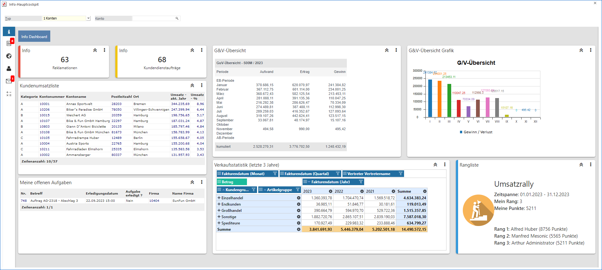
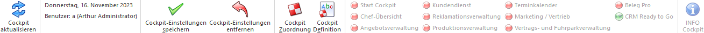

In der Applikation WinLine INFO stehen insgesamt 6 individuell zu gestaltende WinLine INFO-Cockpits zur Verfügung. Hierbei wird wie folgt unterschieden:
ü Objektunabhängig
Das
objektunabhängige "Info-Hauptcockpit" ist zu sehen wie ein normales WinLine
START Cockpit. D.h. es können Menüpunkte, Listen, Links, etc. implementiert
werden.
ü Objektabhängig
Die
objektabhängigen Cockpits "Info-Konto", "Info-Artikel", "Info-Vertreter",
"Info-Arbeitnehmer" und "Info-Projekt" werden im Kontext zu einem ausgewählten
Objekt geladen. Natürlich können in solche Cockpits auch allgemeine Elemente
implementiert werden, allerdings bieten der Einbau von objektabhängigen
OIF-Elemente einen hohen Informationskomfort.
Die Anzeige des Info-Hauptcockpits erfolgt bei einem Wechsel in die Applikation WinLine INFO automatisch, d.h. es ist keine Anwahl eines Menüpunktes notwendig.
Hinweis 1
Die Änderung von bestehenden Cockpits erfolgt über den Button "Cockpit Definition". Die Anlage und Zuweisung von neuen Cockpits mit Hilfe des Buttons "Cockpit Zuordnung".
Hinweis 2
Bei dem ersten Aufruf der WinLine werden folgende Cockpits für den Benutzer automatisch angelegt und zugeordnet:
ü Info-Hauptcockpit -> Info Dashboard
ü Objekt "Konto" -> Konto
ü Objekt "Artikel" -> Artikel
ü Objekt "Vertreter" -> Vertreter
ü Objekt "Arbeitnehmer"-> Arbeitnehmer
ü Objekt "Projekt" -> Projekt

Ø Typ
Aus der Auswahlliste kann ein Objekttyp ausgewählt werden, wodurch sich das folgende Eingabefeld entsprechende ändert. Folgende Typen stehen zur Verfügung:
ü 1 - Konto
ü 2 - Artikel
ü 3 - Vertreter
ü 4 - Arbeitnehmer
ü 5 - Projekt
Ø Objekt
Je nach ausgewähltem Typ kann an dieser Stelle ein passendes Objekt ausgewählt werden. Durch Bestätigung der Eingabe wird das jeweilige objektabhängige Cockpit mit den Daten des Objekts angezeigt.
Ø Cockpitwechsel
Innerhalb des Cockpits werden neben dem Eintrag "Info Dashboard" die bereits geladenen Objekte angezeigt. Ein Wechselt auf ein bereits geladenes Objekt kann durch Anwahl mit der Maustaste erfolgen.
Beispiel
Buttons

Ø Cockpit aktualisieren
Durch Anwahl des Buttons "Cockpit aktualisieren" wird der gesamte Inhalt des Cockpits aktualisiert und neu aufgebaut.
Ø aktuelle Daten
Im weiteren Bereich werden die aktuellen Anmeldeinformationen angezeigt, welche aus den folgenden Elemente bestehen:
ü Tagesdatum
ü Angemeldeter Benutzer
Ø Cockpit-Einstellungen speichern
Über die Cockpit Definition kann der Inhalt des Cockpits hinterlegt werden, d.h. welche Elemente sollen im Cockpit vorhanden sein. Alle weiteren Einstellungen, z.B. Größe und Position von Elementen oder die Widget-Einstellungen (siehe auch Zusätzliche Funktionen im Cockpit), werden direkt im Cockpit definiert und können mit Hilfe des Buttons "Cockpit-Einstellungen speichern" gespeichert werden.
Hinweis
Die Größe und Position von Elementen wird benutzerbezogen gespeichert. Widget-Einstellungen hingegen werden in der Cockpit-Definition abgelegt, wobei das Objektrecht "bearbeiten" (oder höher) für das Cockpit vorhanden sein muss.
Ø Cockpit-Einstellungen entfernen
Mit Hilfe des Buttons "Cockpit-Einstellungen entfernen" werden alle benutzerspezifischen Anpassungen am Cockpit verworfen und der Standard gemäß Cockpit-Definition wiederhergestellt.
Ø Cockpit Zuordnung
Durch Anwahl des Buttons "Cockpit Zuordnung" wird das Programm Cockpit-Zuordnung gestartet. In diesem können folgende Haupttätigkeiten durchgeführt werden:
ü Erstellung von neuen WinLine INFO Cockpits
ü Änderung von bestehenden WinLine INFO Cockpits
ü Zuweisung von WinLine INFO Cockpits an Benutzer oder Benutzergruppen
Ø Cockpit Definition
Durch Anwahl des Buttons wird das Fenster Cockpit Definition geöffnet, in welchem der Aufbau des Cockpits vom gerade aktiven Objekt definiert werden kann.
Hinweis
Der Button kann nur angewählt werden, wenn das Objektrecht "bearbeiten" (oder höher) für das Cockpit vorhanden ist.
Ø Cockpitauswahl
Diese Funktion steht nur bei WinLine START-Cockpits zur Verfügung.
Ø INFO Cockpit
Diese Funktion steht nur bei WinLine START-Cockpits zur Verfügung.